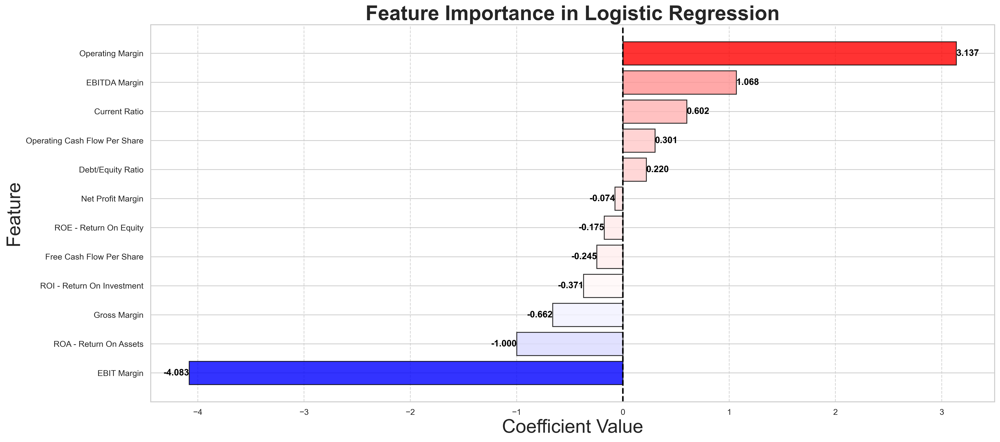

Explore trends, key financial ratios, and feature importance in credit ratings.
Corporate credit ratings are vital in financial markets, guiding investment decisions, determining borrowing costs, and shaping economic stability. Issued by agencies like Standard & Poor’s, Moody’s, and Fitch, these ratings evaluate a company’s creditworthiness based on its financials, debt levels, and risk profile.
Investors, lenders, and policymakers use these ratings to assess a firm’s financial health. High ratings (e.g., AAA, AA) signal strong stability and low risk, while lower ratings (e.g., BB, B, CCC) reflect greater risk of default. Understanding what drives these ratings helps businesses refine financial strategies and supports informed investment decisions.
This project explores corporate credit ratings across industries, uncovering which financial ratios matter most and evaluating machine learning models for prediction. Through visualizations and analysis, we highlight key financial indicators that influence creditworthiness.
To learn more about which financial indicators have the biggest effect on credit ratings visit Principal Component Analysis and Factor Analysis for Feature Selection in Credit Rating. Or if you want to see how machine learning can help improve the accuracy of credit ratings visit Credit Rating Prediction Using Corporate Innovation and Financial Ratios.
This project uses a dataset of 678 corporate credit ratings from 2010 to 2016, sourced from Kaggle. The dataset includes:
To enable fair comparison across industries, financial ratios were standardized using Z-scores. We focused on:
These ratios help identify which financial metrics have the strongest relationship with credit ratings and how they differ by sector.
This visualization shows how binary credit ratings have changed across industries over time. A rating of 1 indicates investment-grade status (BBB- and above), while 0 represents non-investment grade (BB+ and below). Tracking these trends reveals how different sectors respond to macroeconomic conditions, industry-specific risks, and shifts in financial performance.
This interactive chart enables users to compare industries and assess how economic and policy changes impact corporate creditworthiness. Use the toggles to explore different sectors and understand how financial stability evolves across industries.
Different industries place emphasis on different financial strategies. This radar chart compares five key financial ratios across sectors to show how financial characteristics shape credit ratings. These metrics were selected based on their importance from a linear regression model trained on non-binary credit ratings.
We used Z-score normalization to standardize each ratio across sectors, ensuring fair comparison. The five most predictive metrics identified were: Operating Margin, EBITDA Margin, Current Ratio, Operating Cash Flow Per Share, and Debt/Equity Ratio. These metrics reflect profitability, liquidity, and financial leverage — core drivers of creditworthiness.
The radar chart below lets you compare financial profiles across industries. For example, sectors like Business Equipment show stronger liquidity and profitability scores, while Durable Goods may show lower margins but stronger balance sheet ratios. This helps highlight how sectors differ in the financial strategies they rely on to maintain favorable credit ratings.
This visualization reveals that financial strategy varies significantly across industries. Sectors with high margins or strong liquidity often align with higher credit scores, while those relying heavily on debt or operating in low-margin environments may face greater risk. These distinctions provide deeper insight into how industry context influences a firm’s financial profile — and ultimately, its credit rating.
Financial ratios provide critical insights into a company’s financial health, stability, and operational efficiency. Here, we analyze how key financial metrics vary across credit rating groups, grouped into: AAA to AA, A to BBB, and BB and below.
All financial ratios are standardized using Z-score normalization to allow meaningful comparisons across different industries. This transformation adjusts for sector-specific biases, ensuring we assess companies relative to their industry norms. Z-score standardization preserves the shape of each distribution and highlights outliers more effectively than min-max scaling, making it ideal for financial modeling and interpretation.
Use the arrows to explore how each financial ratio is distributed across the three credit rating groups.
The Current Ratio reflects a company's liquidity—its ability to meet short-term obligations. Interestingly, all rating groups show similar distributions, suggesting that liquidity alone is not a primary differentiator across credit rating categories.
This metric measures financial leverage. Companies rated BB and below tend to show wider variation in leverage, while those in the AAA to AA group have tighter, lower-risk profiles. Excessive debt levels are more common among lower-rated companies.
ROE assesses how effectively a company uses equity to generate profits. The AAA to AA group shows a more stable and concentrated ROE distribution, while lower-rated companies exhibit greater volatility—some with very negative returns.
These violin plots emphasize that higher-rated companies tend to maintain more consistent and moderate financial structures, while lower-rated groups exhibit greater variance—often due to inconsistent performance, excessive leverage, or weaker profitability. These financial behaviors help explain the grouping of companies into broad credit rating tiers.
Building on our previous analyses of sector-based trends and financial ratios, this visualization highlights the most influential financial metrics in determining corporate credit ratings. By analyzing how different financial features impact rating classifications, we gain deeper insights into what truly drives creditworthiness.

To identify which financial factors most influence credit ratings, we trained a Logistic Regression model using standardized financial ratios as input features. The target variable was the company’s credit rating score, treated as a continuous scale rather than a binary classification, allowing us to better capture nuances in creditworthiness.
Logistic regression was chosen for its interpretability—each coefficient represents the influence of a financial metric on the credit rating score. A positive coefficient indicates the metric is associated with higher credit scores, while a negative coefficient implies a tendency toward lower scores.
Earlier visualizations showed how financial metrics vary across industries and rating groups. This chart reveals which features are most influential in the model’s predictions. Together, these analyses show that profitability—particularly Operating and EBITDA Margin—has the strongest link to higher credit ratings, while overly aggressive or imbalanced metrics can have mixed effects.
Understanding feature importance helps analysts, investors, and executives focus on the metrics that matter most in determining credit strength. While debt and liquidity are important, this analysis confirms that sustained profitability is a more powerful driver of strong ratings.
This interactive chart helps us explore how individual financial metrics relate to corporate credit rating scores. Lower scores indicate stronger credit ratings (e.g., AAA), while higher scores represent weaker ratings (e.g., BB). Users can toggle between key financial features and observe how values correlate with credit quality.
These patterns help us better understand the financial foundations of corporate credit ratings. Profitability metrics like Operating and EBITDA Margins show clear associations with better scores, while liquidity and leverage also play key roles—especially in capital-intensive sectors.
This visualization bridges financial metrics and real-world credit outcomes, offering actionable insights for investors, analysts, and corporate strategists alike.
This project explored corporate credit ratings by analyzing how key financial ratios influence rating scores across different sectors. Using a combination of machine learning models and interactive visualizations, we examined the relationships between financial metrics, sector-based trends, and overall creditworthiness.
Our findings show that profitability metrics—especially Operating Margin and EBITDA Margin— are among the strongest indicators of better credit ratings. We also found that higher leverage (Debt/Equity Ratio) is generally associated with worse ratings, while liquidity (Current Ratio) plays a moderate but meaningful role. These insights were reinforced by both the linear regression model and the Altair scatterplot trends.
Interactive radar charts and violin plots highlighted how these financial ratios vary by sector, revealing that industries like Business Equipment and Chemicals operate with different financial norms. Sector-based rating trends further showed how macroeconomic events—such as the 2014 oil crash or post-financial crisis recovery—impacted credit ratings in sectors like Energy and Financials.
To build on this project, we suggest:
If you are interested in this project or have insights to share, feel free to reach out: